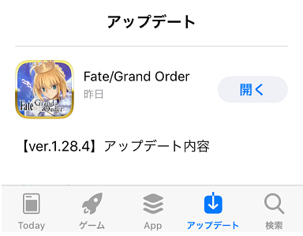
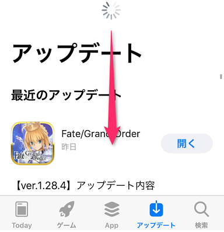

- 9/27
- 【重要】關於於iOS 11的應用程式更新
非常感謝您的使用。
這裡是「Fate/Grand Order」營運團隊。
自9月25日(一) 17:00，在iOS版的｢Fate/Grand Order｣中，釋出了對應最新iOS 11的應用程式。
現在，使用iOS 11的一部份玩家中，在App Store不會反映最新的應用程式，有著無法更新程式情況的詢問。
發生上述問題的情況，請嘗試以下順序確認有無顯示最新的程式。
請麻煩多加嘗試。
・進行使用裝置的再起動(電源 OFF/ON)
・將執行中的其他程式結束，再起動『Fate/Grand Order』
・自App Store的更新列表取得最新的情報
◆於App Store的更新列表取得最新情報的方法

1.打開更新列表，確認有無顯示最新的程式。

2.下拉畫面再更新最新的程式。
於App Store的更新列表取得最新情報的方法，也可從此處確認。
https://faq.fate-go.jp/info_and_news/show/17?site_domain=default
今後也請多多指教「Fate/Grand Order」。